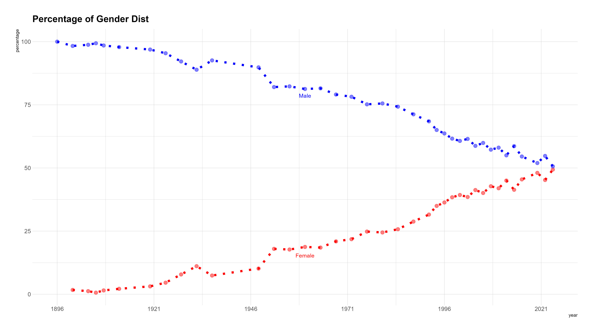
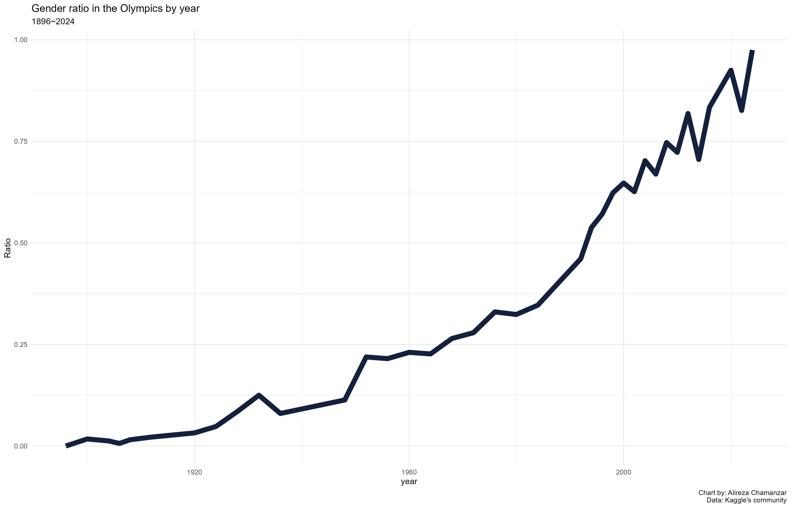
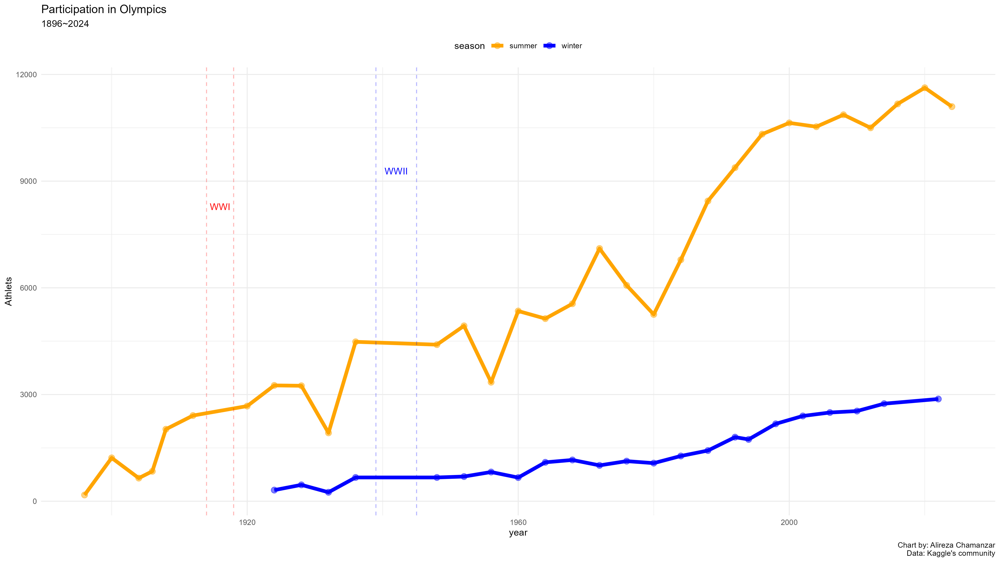
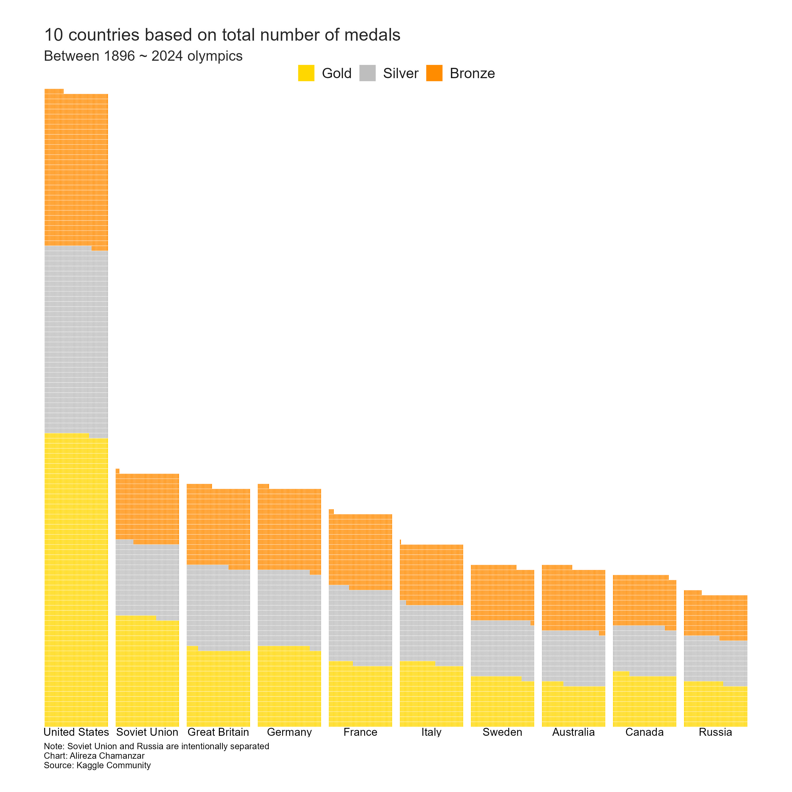
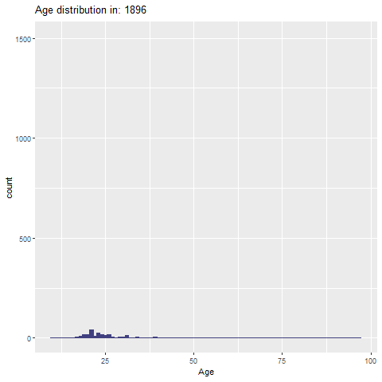

library(dplyr)
library(janitor)
library(ggplot2)
library(tidyr)
library(tibble)
library(plotly)
library(htmlwidgets)
library(lubridate)
library(stringr)
library(hrbrthemes)توضیحات کلی
این یادداشت و بررسی قرار بود در میانهی المپیک ۲۰۲۴ که مسئله زنان داغ بود در پاسخ به سؤالی که برای من ایجاد شده بود شکل بگیرد که به دلیل مشغلهها و درگیریهای این مدت عقب افتاد. پرسش من در نسبت با برابری جنسیتی در تاریخ المپیک بود که محرکی شد که به دنبال دیتاستهای تاریخ المپیک بگردم. در سایت کگل چند تا دیتاست تاریخی دیدم که هیچکدام کامل نبود و همچنین یکی از کاربران دیتاست المپیک ۲۰۲۴ را نیز بهصورت روزانه بهروز میکرد و این شد که در مرحله اول تا تکمیل این دیتاست این کار عقب افتاد و بعد مشغلهها تأثیر خودشان رو گذاشتند.
اما در پاسخ به سؤال اصلی که برابری جنسیتی در طول تاریخ چه مسیری را طی کرده، پاسخ کوتاه مسیر مثبت به سمت برابری کامل هست. از اولین دوره که در سال ۱۸۹۶ برگزار شده و هیچ زنی در المپیک شرکت نکرده تا امروز که تقریباً نسبت ۵۰/۵۰ در المپیک رعایت شده است. این مورد در چارتهای زیر مشخص هست.

و همچنین در چارت زیر که نسبت برابری جنسیتی در طول تاریخ مشخص شدهاست. 0 به معنای عدم وجود برابری و 1 به معنای برابری جنسیتی کامل هست.

برای نگاه کلی به تعداد کلی ورزشکاران در عمر المپیک نیز اطلاعات در چارت زیر نمایش دادهشدهاست:

و برترین کشورها از نظر تعداد مدالی که توانستهاند کسب کنند را در چارت 4م میتوانید ببینید.

البته از تحلیل دادهها میشه جزییات بیشتر در مورد موضوعات دیگه و چارتهای دیگری بیرون کشید که از ابتدا برنامه آن نبود و البته وقتی برای انجامش نداشتم.
این پروژه با R انجام شده و کدها ، دادهها و مراحل آن در ادامه در دسترس هست و بخشی از چارتهای دیگر که در این فرایند نمایش داده شده را به صورت اینتراکتیو میتوانید ببینید.
همچنین دیتاست نهایی این کار که پس از تجمیع و پاکسازی دادههای موجود انجام شده در سایت Kaggle آپلود شده که از اینجامیتوانید به آن دسترسی داشته باشید.
مراحل انجام کار
کتابخانههای مورد نیاز
دادهها
دادههای استفاده شده در این یادداشت همگی از سایت کگل دانلود شدهاند. کاملترین داده از سال 1896 تا 2016 بود و دادههای 2020 و 2024 در فایلهای جداگانهای دانلود شدند و تجمیع شدند.
120 years of Olympic history: athletes and results (Kaggle)
Tokyo 2020 Olympics Dataset (Kaggle)
Beijing Olympic(2022) athlete Profile (Kaggle)
The total number of medals in Beijing Olympic,2022 (kaggle)
Paris 2024 Olympic Summer Games (Kaggle)
فراخوانی دادهها
data_history <- read.csv("1896-2016-120-years-of-Olympic-history-athletes-and-results/athlete_events.csv" )
data_2020 <- read.csv("2020-Tokyo-Olympics-Dataset/2020_Olympics_Dataset.csv")
data_2022 <- read.csv("2022-Beijing-Olympic-athlete-Profile/beijing_Olympic_athlete_profile.csv")
data_2024_list <- read.csv("2024-Paris-Olympic-Summer-Games/athletes.csv")
data_2024_medalist <- read.csv("2024-Paris-Olympic-Summer-Games/medallists.csv")
noc2country <- read.csv("NOC/noc2country.csv")بررسی اولیه دادهها
## 1896-2016
tibble(data_history)
## 2020
tibble(data_2020)
## 2022 Athlets
tibble(data_2022)
## 2024-list
tibble(data_2024_list)
## 2024-medalist
tibble(data_2024_medalist)پاکسازی و تجمیع دادهها
#Preapring Dataset 1896-2016
glimpse(data_history)Rows: 271,116
Columns: 15
$ ID <int> 1, 2, 3, 4, 5, 5, 5, 5, 5, 5, 6, 6, 6, 6, 6, 6, 6, 6, 7, 7, 7, …
$ Name <chr> "A Dijiang", "A Lamusi", "Gunnar Nielsen Aaby", "Edgar Lindenau…
$ Sex <chr> "M", "M", "M", "M", "F", "F", "F", "F", "F", "F", "M", "M", "M"…
$ Age <int> 24, 23, 24, 34, 21, 21, 25, 25, 27, 27, 31, 31, 31, 31, 33, 33,…
$ Height <int> 180, 170, NA, NA, 185, 185, 185, 185, 185, 185, 188, 188, 188, …
$ Weight <dbl> 80, 60, NA, NA, 82, 82, 82, 82, 82, 82, 75, 75, 75, 75, 75, 75,…
$ Team <chr> "China", "China", "Denmark", "Denmark/Sweden", "Netherlands", "…
$ NOC <chr> "CHN", "CHN", "DEN", "DEN", "NED", "NED", "NED", "NED", "NED", …
$ Games <chr> "1992 Summer", "2012 Summer", "1920 Summer", "1900 Summer", "19…
$ Year <int> 1992, 2012, 1920, 1900, 1988, 1988, 1992, 1992, 1994, 1994, 199…
$ Season <chr> "Summer", "Summer", "Summer", "Summer", "Winter", "Winter", "Wi…
$ City <chr> "Barcelona", "London", "Antwerpen", "Paris", "Calgary", "Calgar…
$ Sport <chr> "Basketball", "Judo", "Football", "Tug-Of-War", "Speed Skating"…
$ Event <chr> "Basketball Men's Basketball", "Judo Men's Extra-Lightweight", …
$ Medal <chr> NA, NA, NA, "Gold", NA, NA, NA, NA, NA, NA, NA, NA, NA, NA, NA,…data_history_clean <- data_history %>%
clean_names() %>%
select(name, sex, age, country = team ,noc,year, season, sport, medal)
data_history_clean <- data_history_clean %>%
mutate(sex = case_when(
sex == "M" ~ "Male",
sex == "F" ~ "Female",
TRUE ~ sex
))
#Preapring Dataset 2020
data_2020_clean <- data_2020 %>%
mutate(season = "summer") %>%
select(Name, sex=Gender, Age, Country ,NOC,year, season, sport =Discipline, Medal) %>%
clean_names()
#Preapring Dataset 2022
data_2022 <- data_2022 %>%
mutate(participating.countries = recode(participating.countries,
"Virgin Islands, US" = "United States",
"United States of America" = "United States",
"ROC" = "Russia",
"People's Republic of China" = "China",
"Republic of Korea" = "South Korea",
"Democratic Republic of Timor-Leste" = "Timor Leste",
"Hong Kong, China" = "Hong Kong",
"North Macedonia" = "Macedonia",
"Islamic Republic of Iran" = "Iran"))
data_2022_clean <- data_2022 %>%
mutate(medal = NA) %>%
mutate(year = 2022) %>%
mutate(season = "winter") %>%
left_join(noc2country, by = c("participating.countries" = "country")) %>%
select(name, sex = Gender, age = Age, country = participating.countries, noc, year, season, sport = Occupation, medal) %>%
clean_names()
##
data_2024_list <- data_2024_list %>%
clean_names() %>%
mutate(year= 2024) %>%
mutate(season="summer")
data_2024_medalist <- data_2024_medalist %>%
clean_names() %>%
mutate(year=2024) %>%
mutate(season="summer")
#Perpairing Dataset 2024
##calculate age of athlets
data_2024_list <- data_2024_list %>%
mutate(birth_date = ymd(birth_date)) %>%
mutate(Age = year(today()) - year(birth_date))
data_2024_medalist <- data_2024_medalist %>%
mutate(birth_date = ymd(birth_date)) %>%
mutate(Age = year(today()) - year(birth_date))
##
new_entries <- data_2024_list %>%
anti_join(data_2024_medalist, by = c("code" = "code_athlete")) %>%
mutate(year=2024) %>%
select(name, gender, Age, country, country_code, year, discipline = disciplines) %>%
mutate(medal_type = NA) %>%
mutate(discipline = str_remove_all(discipline, "\\[|\\]|'"))
data_2024_medalist <- data_2024_medalist %>%
bind_rows(new_entries)
## Create new Dataset 2024
data_2024_clean <- data_2024_medalist %>%
select(name, sex= gender, Age, country, noc=country_code, year, season, sport = discipline, medal=medal_type) %>%
mutate(medal=str_replace(medal," Medal",""))%>%
mutate(season = "summer") %>%
clean_names()
#Create a Main dataset 1896-2024
olympic_1896_2024 <- bind_rows(
data_history_clean %>% select(name, sex, age, medal, year, season, country, noc),
data_2020_clean %>% select(name, sex, age, medal, year, season, country, noc),
data_2022_clean %>% select(name, sex, age, medal, year, season, country, noc),
data_2024_clean %>% select(name, sex, age, medal, year, season, country, noc)
)
## mutate country again with noc table
olympic_1896_2024_clean <- olympic_1896_2024 %>%
select(-country) %>%
left_join(noc2country, by = "noc") %>%
select(-full.title, -ISO) %>%
filter(is.na(name) | nzchar(name)) %>%
mutate(name = str_replace_all(name, "^.|'|\\s{2}", ""),
season = tolower(season))ذخیره فایل نهایی
write.csv(olympic_1896_2024_clean, file = "olympic_1896_2024.csv", row.names = FALSE)خروجی نهایی
tibble(head(olympic_1896_2024_clean))از دریچه نمودارها
تعداد کلی شرکتکنندهها
participant_counts <- olympic_1896_2024_clean %>%
distinct(name, year, season) %>%
group_by(year, season) %>%
summarise(Count = n(), .groups = 'drop')
# ترسیم نمودار
plot_participants <- ggplot(participant_counts, aes(x = year, y = Count, color = season)) +
geom_point(size = 3, alpha = 0.5) +
geom_line(linewidth = 2) +
geom_vline(xintercept = 1914, linetype = "dashed", color = "red", size = 0.5, alpha = 0.3) +
geom_vline(xintercept = 1918, linetype = "dashed", color = "red", size = 0.5, alpha = 0.3) +
geom_vline(xintercept = 1939, linetype = "dashed", color = "blue", size = 0.5, alpha = 0.3) +
geom_vline(xintercept = 1945, linetype = "dashed", color = "blue", size = 0.5, alpha = 0.3) +
annotate("text", x = 1916, y = 8000,
label = "WWI", color = "red", vjust = -1) +
annotate("text", x = 1942, y = 9000,
label = "WWII", color = "blue", vjust = -1) +
labs(title = "Participation in Olympics",
subtitle = "1896~2024",
x = "year",
y = "Athlets",
caption = "Chart by: Alireza Chamanzar\nData: Kaggle's community") +
scale_color_manual(values = c("summer" = "orange", "winter" = "blue"))+
theme_minimal()+
theme(legend.position = "top")ggplotly(plot_participants)توزیع سنی
توزیع سنی تاریخ المپیک (1896-2024)
age_distribution <- olympic_1896_2024_clean %>%
filter(!is.na(age))
age_plot <- ggplot(age_distribution, aes(x = age)) +
geom_histogram(binwidth = 1, fill = "#404080", color= "#404080") +
labs(title = "Age distribution of athletes in the Olympics 1896-20242024",
x = "age",
y = "counts")+
theme_ipsum_rc()توزیع سنی به تفکیک سال (انیمیشن)
library(gganimate)
p <- ggplot(age_distribution, aes(x = age)) +
geom_histogram(binwidth = 1, fill = "#404080", color = "#404080") +
labs(title = 'Age distribution in: {frame_time}', x = 'Age', y = 'count') +
transition_time(as.integer(year))+
ease_aes('linear')
# ذخیره انیمیشن
anim_save("age_distribution_animation.gif", animate(p, nframes = 400, fps = 20, renderer = gifski_renderer(width = 1000, height = 1000)))
برابری جنسیتی؟ آری یا نه
نسبت جنسیتی
# محاسبه نسبت جنسیتی به تفکیک سال
gender_ratio <- olympic_1896_2024_clean %>%
group_by(year, sex) %>%
summarise(count = n(), .groups = 'drop') %>%
pivot_wider(names_from = sex, values_from = count, values_fill = list(count = 0)) %>%
mutate(ratio = Female / Male)
# نمایش نمودار نسبت جنسیتی به تفکیک سال
gender_ratio <- ggplot(gender_ratio, aes(x = year, y = ratio)) +
geom_line(linewidth= 2, color = "#14213d") +
labs(title = "Gender ratio in the Olympics by year" ,
subtitle = "1896~2024",
x = "year",
y = "Ratio",
caption = "Chart by: Alireza Chamanzar\nData: Kaggle's community")+
theme_minimal()نسبت مشارکت مردان و زنان در المپیک
gender_distribution <- olympic_1896_2024_clean %>%
group_by(year, sex) %>%
summarise(count = n(), .groups = 'drop') %>%
group_by(year) %>%
mutate(total_count = sum(count),
percentage = count / total_count * 100)
gender_plot <- ggplot(gender_distribution, aes(x = year, y = percentage, fill = sex)) +
geom_area(linetype = 1, size = 0.001, color = "blue") +
scale_fill_manual(values = c("Male" = "blue", "Female" = "#BF2EF0")) +
labs(title = "Gender Distribution in Olympic Games Over Time",
x = "Year", fill = "Gender") +
annotate("text", x = 1925, y = 25,
label = "Male", color = "white", vjust = -1, size = 8) +
annotate("text", x = 2000, y = 80,
label = "Female", color = "white", vjust = -1, size = 8, angle = -20) +
scale_x_continuous(breaks = seq(1896, 2024, by = 25)) +
theme_minimal() +
theme(axis.title.y = element_blank(),
axis.text.y = element_blank(),
axis.ticks.y = element_blank(),
panel.grid.major = element_blank(),
panel.grid.minor = element_blank(),
legend.position = "none")نسبت مشارکت مردان و زنان در المپیک (جارت دوم)
gender_inequality_in_years <- ggplot(gender_distribution, aes(x = year, y = percentage, color = sex))+
geom_line(linewidth = 1, linetype = 3)+
geom_point(size = 2, alpha= 0.5)+
scale_color_manual(values = c("Male" = "blue", "Female" = "red"))+
ggtitle("Percentage of Gender Dist")+
annotate("text", x = 1960, y = 13,
label = "Female", color = "red", vjust = -1) +
annotate("text", x = 1960, y = 95,
label = "Male", color = "blue", vjust = 11)+
scale_x_continuous(breaks = seq(1896, 2024, by = 25)) +
guides(color = FALSE)+
theme_ipsum()مدالها را کی برد خونه؟
کشورها با بیشتر مدال کسب شده در تاریخ المپیک
library(waffle)
medal_counts <- olympic_1896_2024_clean %>%
filter(!is.na(medal)) %>%
group_by(country, medal) %>%
summarise(count = n(), .groups = 'drop') %>%
arrange(desc(count))
top_countries <- medal_counts %>%
group_by(country) %>%
summarise(total_medals = sum(count)) %>%
arrange(desc(total_medals)) %>%
head(10)
top_medal_counts <- medal_counts %>%
filter(country %in% top_countries$country)
waffle_data <- top_medal_counts %>%
mutate(medal = factor(medal, levels = c("Gold", "Silver", "Bronze"))) %>%
group_by(country, medal) %>%
summarise(count = sum(count), .groups = 'drop') %>%
ungroup() %>%
group_by(country) %>%
mutate(total = sum(count)) %>%
ungroup() %>%
arrange(desc(total))
waffle_data <- waffle_data %>%
mutate(country = reorder(country, -total))
# ایجاد وافل چارت
waffle_chart <- ggplot(waffle_data, aes(fill = medal, values = count)) +
geom_waffle(color = "white", size = 0.1, n_rows = 50, flip = TRUE) +
scale_fill_manual(values = c("Gold" = "gold", "Silver" = "gray", "Bronze" = "darkorange")) +
facet_wrap(~ country, nrow = 1, strip.position = "bottom") +
scale_x_discrete() +
scale_y_continuous(labels = function(x) x * 10,
expand = c(0,0)) +
theme_void() +
labs(title = "10 countries based on total number of medals",
subtitle = "Between 1896 ~ 2024 olympics",
fill = "Medal",
caption = "Note: Soviet Union and Russia are intentionally separated\nChart: Alireza Chamanzar\nSource: Kaggle Community") +
theme(axis.title = element_blank(),
axis.text.x = element_blank(),
axis.text.y = element_blank(),
panel.grid = element_blank(),
strip.text.x = element_text(size = 10),
plot.caption = element_text(hjust = 0, size = 8),
legend.position = "top",
legend.title = element_blank(),
legend.text = element_text(size=13,
face = 'plain',
color = "grey10"),
# TITLE
plot.title.position = "plot",
plot.title = element_text(size = 16,
color = "grey15"),
# SUB-TITLE
plot.subtitle = element_text(size = 13,
color = "grey15"),
plot.background = element_rect(color="white", fill="white"),
plot.margin = margin(20, 40, 20, 40))ارجاع
برای استناد به این یادداشت میتوانید از فرمت زیر استفاده کنید:
چمنزار, علیرضا. 2024. “المپیک زیر ذرهبین.” September 3,
2024. https://bit.ly/Olympic-history.